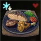
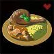
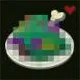

The tantalizing aroma of mushrooms and butter beckons you to the table! Any type of mushroom can be used in this recipe, but this particular mushroom is fantastic for bring strength and energy to those limbs, giving you attack power and fighting spirit you never knew you were capable of!
"This mushroom is known for the natural slice in its cap. Eating it fosters your competitive spirit. Use it when cooking to prepare a dish that will increase your strength."
Click the images below to see Link's other recipes!


